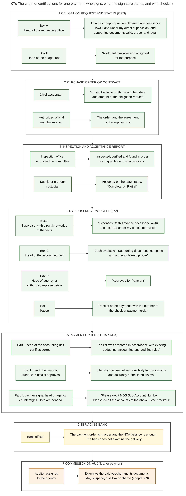

Diagram 07c · Mermaid flowchart
The chain of certifications for one payment: who signs, what the signature states, and who checks it
Question: A payment depends on several signatures. What exactly does each signature assert, and is that assertion checked by anyone outside the agency before the money leaves?

What the diagram shows
- Question: a payment depends on several signatures. What exactly does each signature assert, and is that assertion checked by anyone outside the agency before the money leaves?
- How to read it: each row is one document. Left = who signs. Right = what the signature states, in the words of the form where the text is in quotation marks. The colour of the row shows who makes the statement: green = an officer of the agency, yellow = the bank, orange = the auditor.
- What the diagram shows: the facts "the goods were delivered" and "the delivery meets the order" are stated only by officers of the agency, and by two different officers. The bank checks the payment order. COA checks the substance, after payment. The officer who certifies that funds and cash are available (the accountant) is never the officer who signs the advice to the bank (the cashier).
- Sources: the words in quotation marks are read on the forms of the Manual: obligation request [GAM-V2 App.11], purchase order [GAM-V2 App.61], inspection and acceptance report [GAM-V2 App.62], disbursement voucher [GAM-V2 App.32], payment order [GAM-V2 App.42]. The seven basic requirements for a disbursement and the officer who certifies each [GAM-V1 Ch.2 s.36]. Certificate of funds before a contract [PD1445 s.86][EO292-B6 s.40]. Signatories of the payment order, who must be bonded [GAM-V1 Ch.6 s.51]. No member of the accounting unit or of the internal control unit may be designated to draw checks [PD1445 s.92]. Pre-audit by COA lifted in 2011, COA may restore it where internal control is inadequate [COA2011-002].
- A difference inside the manual: the form of the voucher has five boxes, A to E. The text of the procedure calls the certificate of the accountant "Box B", the approval "Box C" and the receipt "Box D" [GAM-V1 Ch.6 s.12]. This diagram follows the form.
- General knowledge, not opened in a source here: what the bank checks, and the role of the internal audit unit.
Code

---
title: "07c The chain of certifications for one payment: who signs, what the signature states, and who checks it"
config:
flowchart:
wrappingWidth: 900
---
flowchart TB
%% QUESTION THIS DIAGRAM ANSWERS: a payment depends on several signatures. What exactly does each signature assert, and is that assertion checked by anyone outside the agency before the money leaves?
%% READING: each row is one document. Left = who signs. Right = what the signature states, in the words of the form where the text is in quotation marks. The colour of the row shows who makes the statement: green = an officer of the agency, yellow = the bank, orange = the auditor.
%% WHAT THE DIAGRAM SHOWS: the facts "the goods were delivered" and "the delivery meets the order" are stated only by officers of the agency, and by two different officers. The bank checks the payment order. COA checks the substance, after payment. The officer who certifies that funds and cash are available (the accountant) is never the officer who signs the advice to the bank (the cashier).
%% SOURCES: the words in quotation marks are read on the forms of the Manual: obligation request [GAM-V2 App.11], purchase order [GAM-V2 App.61], inspection and acceptance report [GAM-V2 App.62], disbursement voucher [GAM-V2 App.32], payment order [GAM-V2 App.42]. The seven basic requirements for a disbursement and the officer who certifies each [GAM-V1 Ch.2 s.36]. Certificate of funds before a contract [PD1445 s.86][EO292-B6 s.40]. Signatories of the payment order, who must be bonded [GAM-V1 Ch.6 s.51]. No member of the accounting unit or of the internal control unit may be designated to draw checks [PD1445 s.92]. Pre-audit by COA lifted in 2011, COA may restore it where internal control is inadequate [COA2011-002].
%% A DIFFERENCE INSIDE THE MANUAL: the form of the voucher has five boxes, A to E. The text of the procedure calls the certificate of the accountant "Box B", the approval "Box C" and the receipt "Box D" [GAM-V1 Ch.6 s.12]. This diagram follows the form.
%% GENERAL KNOWLEDGE, NOT OPENED IN A SOURCE HERE: what the bank checks, and the role of the internal audit unit.
subgraph R1["1 OBLIGATION REQUEST AND STATUS (ORS)"]
direction LR
A1["Box A<br/>Head of the requesting office"] --> A2["'Charges to appropriation/allotment are necessary,<br/>lawful and under my direct supervision; and<br/>supporting documents valid, proper and legal'"]
A3["Box B<br/>Head of the budget unit"] --> A4["'Allotment available and obligated<br/>for the purpose'"]
end
subgraph R2["2 PURCHASE ORDER OR CONTRACT"]
direction LR
P1["Chief accountant"] --> P2["'Funds Available', with the number, date<br/>and amount of the obligation request"]
P3["Authorized official<br/>and the supplier"] --> P4["The order, and the agreement<br/>of the supplier to it"]
end
subgraph R3["3 INSPECTION AND ACCEPTANCE REPORT"]
direction LR
B1["Inspection officer<br/>or inspection committee"] --> B2["'Inspected, verified and found in order<br/>as to quantity and specifications'"]
B3["Supply or property<br/>custodian"] --> B4["Accepted on the date stated:<br/>'Complete' or 'Partial'"]
end
subgraph R4["4 DISBURSEMENT VOUCHER (DV)"]
direction LR
C1["Box A<br/>Supervisor with direct knowledge<br/>of the facts"] --> C2["'Expenses/Cash Advance necessary, lawful<br/>and incurred under my direct supervision'"]
C3["Box C<br/>Head of the accounting unit"] --> C4["'Cash available'. 'Supporting documents complete<br/>and amount claimed proper'"]
C5["Box D<br/>Head of agency or<br/>authorized representative"] --> C6["'Approved for Payment'"]
C7["Box E<br/>Payee"] --> C8["Receipt of the payment, with the number of<br/>the check or payment order"]
end
subgraph R5["5 PAYMENT ORDER (LDDAP-ADA)"]
direction LR
D1["Part I: head of the accounting unit<br/>certifies correct"] --> D2["The list 'was prepared in accordance with existing<br/>budgeting, accounting and auditing rules'"]
D3["Part I: head of agency or<br/>authorized official approves"] --> D4["'I hereby assume full responsibility for the veracity<br/>and accuracy of the listed claims'"]
D5["Part II: cashier signs, head of agency<br/>countersigns. Both are bonded"] --> D6["'Please debit MDS Sub-Account Number ...<br/>Please credit the accounts of the above listed creditors'"]
end
subgraph R6["6 SERVICING BANK"]
direction LR
E1["Bank officer"]:::bank --> E2["The payment order is in order and the NCA balance is enough.<br/>The bank does not examine the delivery"]:::bank
end
subgraph R7["7 COMMISSION ON AUDIT, after payment"]
direction LR
F1["Auditor assigned<br/>to the agency"]:::aud --> F2["Examines the paid voucher and its documents.<br/>May suspend, disallow or charge (chapter 09)"]:::aud
end
R1 --> R2 --> R3 --> R4 --> R5 --> R6 --> R7
classDef default fill:#edf7ed,stroke:#2e6b2e,color:#111
classDef bank fill:#fff8dc,stroke:#8a6d00,color:#111
classDef aud fill:#fdf1e3,stroke:#a35200,color:#111
style R1 fill:#ffffff,stroke:#444444
style R2 fill:#ffffff,stroke:#444444
style R3 fill:#ffffff,stroke:#444444
style R4 fill:#ffffff,stroke:#444444
style R5 fill:#ffffff,stroke:#444444
style R6 fill:#ffffff,stroke:#444444
style R7 fill:#ffffff,stroke:#444444